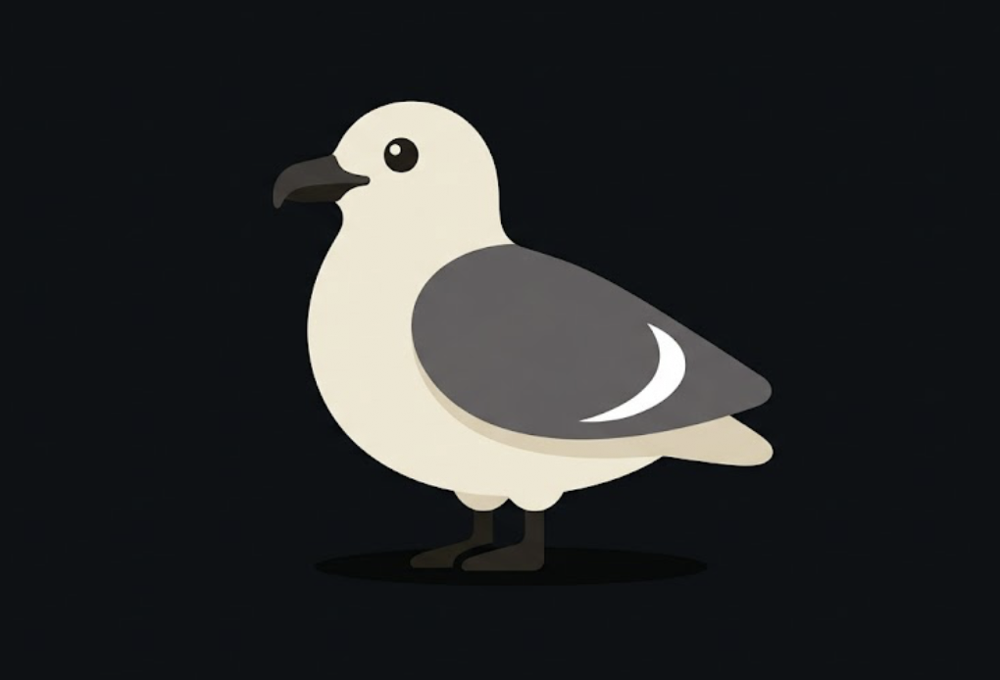

Your fowl-weather friend. A weather app for iPhone with a bird that reads your day.
"Forgot my umbrella. Be there shortly."
Free and open source. Still a work in progress.
Skua shows the numbers, then tells you what they mean for the day you actually have.
Reads the day as a plan instead of a forecast: when to be out and what to watch for. With your permission it checks the weather for your next calendar event.
Each upcoming day gets a one-word character and a grade, so you can see which day to bank on, plus the most comfortable daylight hour to be out.
Add a run, ride, camp, or trip with a time and place, and the bird gives its read on that window.
When rain is close, a chart of the next two hours shows when it starts and stops.
One look at the screen tells you the weather before you read a number.
The backdrop follows the weather: a condition-driven sky, a real sun or moon, a star field on clear nights, and falling rain or snow when it comes. The skua perches on the hills in front.
Circular gauges for the bounded readings, tiles for the rest, and a pressure trend read from the hourly series.
The Skua tab keeps lifetime stats on your phone: days used, cities checked, and the hottest, coldest, gustiest, and highest-UV readings you have seen.
Three app icons to choose from in settings: Cloud Perch, Sky Punch, and Ember.
The skua comments on the conditions the screen is showing and on your next calendar event. Pick how it talks to you. Every line comes from a bank built into the app, so the voice works offline and sends nothing anywhere.
Add the cards you care about, arrange them, and save named layouts to switch between.
Graph any hourly series across the next 48 hours with hold and drag, plus a week of highs and lows with range bars.
Animated radar on a map with a timeline you can scrub.
Official National Weather Service warnings, with optional notifications for severe weather.
A graded read on near-term storm and strike risk.
Air quality and pollen levels, with per-person allergen callouts for your household. The household list stays on your phone.
Tides from the nearest station, marine conditions, aurora visibility, the sun's arc, and the moon phase.
Save every location that matters and switch between them.
Home Screen and Lock Screen widgets, including a configurable forecast widget and a dedicated Flight Plan widget.
Skua has no server of its own. The app calls each source directly from your phone through a shared Go core.
| Data | Source |
|---|---|
| Forecast and rain nowcast | Apple Weather, with Open-Meteo as the fallback |
| Air quality, marine, lightning potential | Open-Meteo |
| Place search | Open-Meteo geocoding |
| Severe alerts | National Weather Service |
| Tides | NOAA Tides and Currents |
| Aurora | NOAA Space Weather Prediction Center |
| Radar | RainViewer |
| Pollen | Pollen.com |
| On this day | Wikipedia |
Severe alerts, tides, and pollen cover the United States only.
Skua is free under the Apache 2.0 license, with no ads, no accounts, and no paid tier. It is not available to download yet. A TestFlight beta is the next step, and this page will say so when it opens. Until then, the code is on GitHub and builds with Xcode and gomobile. It requires iOS 17 or later.